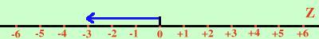
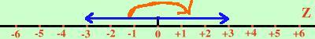
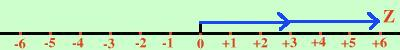

(-
3
) · (-
2
) =
considero il primo numero su Z

Per moltiplicare per il meno segno riporto il numero dalla parte opposta da dove si trova

(lo rovescio come se fosse un tergicristallo)
e poi lo ripeto due volte

(-
3
) · (-
2
) = +6